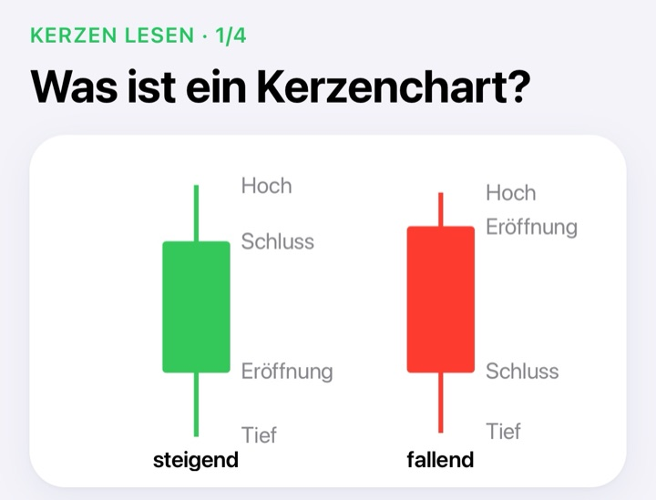

Einstieg
Kerzenchart lesen: So verstehst du jede Kerze
Kerzencharts sehen auf den ersten Blick kompliziert aus. Dabei steckt in jeder Kerze nur eine einfache Geschichte aus vier Kursen. So liest du sie in wenigen Minuten.

Ein Kerzenchart (englisch Candlestick-Chart) zeigt den Kursverlauf als Reihe von Kerzen. Jede Kerze fasst einen Zeitraum zusammen, zum Beispiel einen Handelstag. Anders als eine einfache Linie, die nur die Schlusskurse verbindet, zeigt eine Kerze vier Kurse auf einmal und damit auch, wie umkämpft der Tag war. Entwickelt wurde die Darstellung in Japan, im Westen bekannt gemacht hat sie vor allem der Analyst Steve Nison Anfang der 1990er-Jahre.
Die vier Kurse einer Kerze

| Kurs | Englisch | Wo du ihn siehst |
|---|---|---|
| Eröffnung | Open | unteres Ende des Körpers bei einer grünen Kerze, oberes bei einer roten |
| Hoch | High | Spitze des oberen Dochts |
| Tief | Low | Ende des unteren Dochts |
| Schluss | Close | oberes Ende des Körpers bei einer grünen Kerze, unteres bei einer roten |
Deshalb spricht man auch von OHLC-Daten: Open, High, Low, Close.
Körper, Docht und Farbe
- Körper: der dicke Teil zwischen Eröffnung und Schluss. Je größer er ist, desto deutlicher hat eine Seite den Zeitraum gewonnen.
- Dochte (auch Schatten oder Lunten): die dünnen Linien darüber und darunter. Sie zeigen, wie weit der Kurs zwischendurch gelaufen ist, bevor er zurückkam.
- Farbe: Grün (oder weiß) heißt, der Schluss liegt über der Eröffnung. Rot (oder schwarz) heißt, der Schluss liegt darunter.
In manchen Ländern sind die Farben vertauscht. In China etwa steht Rot für steigende Kurse.
Ein Beispiel über drei Tage
| Tag | Eröffnung | Hoch | Tief | Schluss | Kerze |
|---|---|---|---|---|---|
| Montag | 100 € | 104 € | 99 € | 103 € | grün, großer Körper (3 €), kurze Dochte |
| Dienstag | 103 € | 103,50 € | 98 € | 99 € | rot, großer Körper (4 €), kurzer oberer Docht |
| Mittwoch | 99 € | 100 € | 95 € | 99,60 € | grün, kleiner Körper (0,60 €), langer unterer Docht (4 €) |
So liest du die drei Tage:
- Montag: Die Käufer bestimmen den Tag, der Kurs schließt nahe am Hoch.
- Dienstag: Die Verkäufer übernehmen und drücken den Kurs bis kurz vor das Tagestief.
- Mittwoch: Der Kurs fällt bis 95 €, doch Käufer holen ihn fast vollständig zurück. Diese Form mit kleinem Körper oben und langem unterem Docht heißt Hammer. Nach einem Rückgang kann sie eine Wende ankündigen.
Welche Zeiteinheit passt?
Eine Kerze kann jeden Zeitraum abbilden: eine Minute, eine Stunde, einen Tag oder eine Woche. Derselbe Kursverlauf sieht je nach Zeiteinheit völlig anders aus. Die fünf Tageskerzen einer Woche ergeben zusammen genau eine Wochenkerze: Eröffnung vom Montag, Schluss vom Freitag, dazu das höchste Hoch und das tiefste Tief der Woche.
Für Einsteiger sind Tageskerzen am besten. Sie sind ruhig genug, um Muster zu erkennen, und zeigen trotzdem genug Bewegung. In Minuten- und Stundencharts entstehen viel mehr scheinbare Signale, die oft nur Zufall sind.
Was dir eine Reihe von Kerzen verrät
- Viele große grüne Körper: Die Käufer haben die Oberhand, ein Aufwärtstrend.
- Kleiner werdende Körper im Trend: Der Schwung lässt nach. Achte dann auf einen Doji oder andere Umkehrzeichen.
- Lange Dochte an derselben Stelle: Dort wurde der Kurs mehrmals zurückgewiesen, oft an einer Unterstützung oder einem Widerstand.
- Lücken zwischen zwei Kerzen: Der Kurs ist gesprungen, zum Beispiel nach Nachrichten. Was diese Lücken bedeuten, erklärt der Artikel Kurslücken.
Wiederkehrende Formen aus einer bis drei Kerzen zeigt der Überblick Die 8 wichtigsten Kerzenmuster, größere Formationen über Wochen der Artikel Chartmuster erkennen.
Häufige Anfängerfehler
- Eine einzelne Kerze überbewerten. Aussagekraft entsteht erst im Zusammenhang mit Trend und Zonen.
- Docht und Körper verwechseln. Der Körper zeigt Eröffnung und Schluss, die Dochte nur die Extreme.
- Die Zeiteinheit vergessen. Eine rote Tageskerze kann mitten in einem steigenden Wochenchart stecken.
- Jedes Muster handeln wollen. Auch wer Muster erkennt, sollte vorher Risiko und Stop festlegen, siehe Positionsgröße berechnen.
Kerzencharts lesen üben
In InQuestly gibt es dafür die Gratis-Lektion „Kerzen lesen“ im Kurs Charttechnik & Muster: kurze Lernkarten mit Skizzen, danach Fragen zum Mitmachen. Im Gratis-Spiel „Bulle oder Bär?“ siehst du Kerzencharts und entscheidest per Wischen, wie es weitergeht. Die wichtigsten Muster wie Hammer, Doji oder Engulfing behandelt der Kurs „Kerzenmuster“ mit InQuestly Pro. Die Kursverläufe zum Üben sind nachgebildet, echtes Geld ist nie im Spiel.
Häufige Fragen
Wie liest man einen Kerzenchart?
Jede Kerze zeigt Eröffnung, Hoch, Tief und Schluss eines Zeitraums. Der Körper reicht von der Eröffnung bis zum Schluss, die Dochte zeigen Hoch und Tief. Grün heißt Schluss über der Eröffnung, Rot darunter.
Was bedeutet der Docht einer Kerze?
Er zeigt, wie weit der Kurs im Zeitraum gestiegen oder gefallen ist, bevor er zurückkam. Lange Dochte bedeuten, dass ein Kursniveau abgelehnt wurde.
Was bedeutet eine rote Kerze?
Der Schlusskurs liegt unter dem Eröffnungskurs desselben Zeitraums. Ob der Kurs gegenüber dem Vortag gefallen ist, zeigt die Farbe nicht unbedingt.
Welche Zeiteinheit ist für Anfänger am besten?
Tageskerzen. Sie zeigen genug Bewegung und sind ruhiger als Minuten- oder Stundencharts, in denen viele Zufallssignale entstehen.
Warum sind Kerzencharts besser als Linien?
Eine Linie verbindet nur die Schlusskurse. Eine Kerze zeigt zusätzlich Eröffnung, Hoch und Tief und damit, wie umkämpft ein Zeitraum war.
Was bedeutet OHLC?
Open, High, Low, Close, also Eröffnung, Hoch, Tief und Schluss. Aus diesen vier Werten wird jede Kerze gezeichnet.
Dieser Artikel dient der Bildung und ist keine Anlageberatung. Beispiele sind vereinfacht und ohne Steuern dargestellt.